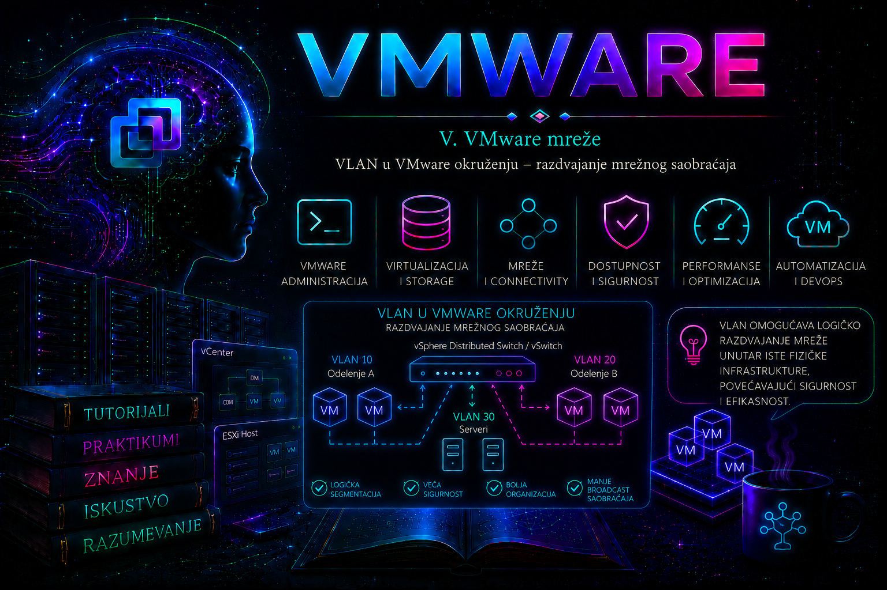

VMware

VLAN, odnosno Virtual Local Area Network, omogućava logičko razdvajanje mrežnog saobraćaja unutar iste fizičke infrastrukture. Umesto postavljanja posebnog fizičkog switcha i posebnih kablova za svaku mrežu, više odvojenih Layer 2 mreža može da koristi iste fizičke adaptere, uplinkove i switch uređaje. Saobraćaj svake mreže označava se odgovarajućim VLAN identifikatorom, čime se sprečava njegovo mešanje sa saobraćajem drugih VLAN-ova.
U VMware okruženju VLAN konfiguracija povezuje tri sloja:
- virtuelnu mašinu ili VMkernel adapter
- VMware port grupu i virtuelni switch
- fizički mrežni switch i ostatak mrežne infrastrukture
Ispravna konfiguracija samo jednog od ovih slojeva nije dovoljna. Ako VMware port grupa koristi VLAN 120, fizički switch mora dozvoliti VLAN 120 preko ESXi uplinka, a IP konfiguracija virtuelne mašine mora pripadati podmreži koja je projektovana za taj VLAN.
VLAN nije isto što i IP podmreža. VLAN predstavlja Layer 2 broadcast domen, dok IP podmreža pripada Layer 3 konfiguraciji. U praksi se često jednom VLAN-u dodeljuje jedna IP podmreža, ali to je rezultat mrežnog dizajna, a ne tehnički zahtev samog VLAN mehanizma.
Ova lekcija koristi terminologiju savremenih izdanja vSphere Networking dokumentacije. Principi VST, VGT i EST važe i u starijim podržanim okruženjima, ali se nazivi ekrana i položaj politika u vSphere Client-u razlikuju između izdanja. vSphere Distributed Switch zahteva odgovarajuće izdanje, pretplatu ili entitlement; pre projektovanja obavezno treba proveriti pravo korišćenja za konkretan vSphere/VCF paket. Komande za distributed objekte izvršavaju se preko vCenter Server-a, dok lokalni ESXCLI upravlja standardnim switch-em na pojedinačnom hostu. Savremena dokumentacija komandnu porodicu i dalje prikazuje kao PowerCLI cmdlet-e, iako se distribucija proizvoda može pojavljivati pod nazivom VCF PowerCLI.
Zašto se VLAN koristi u VMware infrastrukturi?
VLAN razdvajanje omogućava da različite vrste saobraćaja koriste istu fizičku mrežnu infrastrukturu, ali da ostanu logički odvojene.
Tipična VMware infrastruktura može koristiti:
- VLAN 10 – ESXi management mrežu
- VLAN 20 – vMotion mrežu
- VLAN 30 – storage mrežu
- VLAN 40 – vSAN mrežu
- VLAN 110 – produkcione web servere
- VLAN 120 – produkcione baze podataka
- VLAN 210 – razvojno okruženje
- VLAN 220 – testno okruženje
- VLAN 310 – DMZ mrežu
- VLAN 410 – backup mrežu
Ovim se postižu:
- izolacija različitih mrežnih segmenata
- manji broadcast domeni
- jednostavnije sprovođenje bezbednosnih pravila
- odvajanje infrastrukturnog i korisničkog saobraćaja
- efikasnije korišćenje fizičkih mrežnih adaptera
- lakša migracija virtuelnih mašina između hostova
- jasnija organizacija produkcionih, testnih i razvojnih sistema
VLAN identifikatori
IEEE 802.1Q VLAN oznaka sadrži VLAN identifikator. U VMware port grupama sreću se sledeće vrednosti:
- 0 – VMware port grupa ne dodaje VLAN oznaku
- 1–4094 – port grupa označava saobraćaj konkretnim VLAN ID-em
- 4095 – Standard Switch port grupa prosleđuje VLAN trunk prema gostujućem sistemu
Vrednost 4095 nije običan VLAN. Ona na vSphere Standard Switch-u predstavlja posebnu konfiguraciju u kojoj gostujući operativni sistem ili virtuelni mrežni uređaj obrađuje VLAN oznake.
U produkcionim mrežama treba koristiti samo VLAN-ove koji su definisani u mrežnom planu organizacije. Nasumično izabrani VLAN ID neće uspostaviti komunikaciju ako isti VLAN nije konfigurisan na fizičkim switchevima, ruterima, firewall uređajima i drugim relevantnim komponentama.
802.1Q označavanje Ethernet okvira
Kada se koristi VLAN tagging, u Ethernet okvir umeće se 802.1Q oznaka. Ona omogućava switch uređajima da prepoznaju kom VLAN-u okvir pripada.
Pojednostavljen tok izgleda ovako:
VM
|
Port Group – VLAN 110
|
vSwitch dodaje VLAN oznaku 110
|
vmnic uplink
|
Fizički trunk port
|
Fizički switch obrađuje VLAN 110
Kada okvir iz fizičke mreže stigne do ESXi hosta, virtuelni switch proverava VLAN oznaku, prosleđuje okvir odgovarajućoj port grupi i uklanja oznaku pre nego što okvir preda običnoj virtuelnoj mašini.
U ovom modelu gostujući operativni sistem ne mora da zna da se VLAN koristi. On vidi standardni Ethernet saobraćaj.
Tri osnovna modela VLAN označavanja
U VMware okruženju razlikuju se tri osnovna modela:
- VST – Virtual Switch Tagging
- VGT – Virtual Guest Tagging
- EST – External Switch Tagging
Razlika između njih određena je mestom na kojem se VLAN oznaka dodaje i uklanja.
VST – Virtual Switch Tagging
Kod Virtual Switch Tagging modela VLAN oznakama upravlja VMware virtuelni switch. Port grupa dobija VLAN ID između 1 i 4094, dok gostujući operativni sistem koristi običan mrežni adapter bez VLAN podinterfejsa.
Primer:
VM-Web01
IP: 10.110.0.21/24
VLAN konfiguracija u gostu: nema
|
PG-PROD-WEB
VLAN ID: 110
|
vSwitch-Production
|
vmnic2 i vmnic3
|
Fizički trunk port
Allowed VLANs: 110,120,210
Kada VM pošalje okvir:
- gostujući sistem šalje neoznačen Ethernet okvir
- port grupa ga povezuje sa VLAN-om 110
- virtuelni switch dodaje 802.1Q oznaku 110
- okvir izlazi preko fizičkog uplinka
- fizički switch prihvata označen okvir na trunk portu
Kod dolaznog saobraćaja postupak se odvija obrnutim redosledom.
VST je najčešći i preporučeni model za standardne serverske virtuelne mašine zato što:
- VLAN konfiguracija ostaje centralizovana na VMware mrežnom sloju
- gostujući sistem ne mora da upravlja VLAN oznakama
- jednostavnije je povezivanje VM-a sa drugom mrežom
- lakše se proverava konfiguracija port grupa
- smanjuje se mogućnost pogrešne VLAN konfiguracije unutar gosta
VGT – Virtual Guest Tagging
Kod Virtual Guest Tagging modela VLAN oznake dodaje i uklanja gostujući operativni sistem ili virtuelni mrežni uređaj. VMware port grupa prosleđuje trunk saobraćaj do virtuelne mašine.
Na vSphere Standard Switch port grupi za VGT koristi se VLAN vrednost:
4095
Primer:
Virtuelni firewall
|
+-- VLAN podinterfejs 110
+-- VLAN podinterfejs 120
+-- VLAN podinterfejs 310
|
PG-FIREWALL-TRUNK
VLAN ID: 4095
|
vSwitch-Edge
|
vmnic4 i vmnic5
|
Fizički trunk
Allowed VLANs: 110,120,310
VGT se koristi kada jedna virtuelna mašina mora da obrađuje više VLAN-ova preko jednog virtuelnog adaptera. Tipični primeri su:
- virtuelni firewall
- virtuelni ruter
- load balancer
- IDS ili IPS sistem
- specijalizovani mrežni appliance
- laboratorijska mrežna topologija
- Linux server koji legitimno koristi više VLAN podinterfejsa
VGT ne treba koristiti za obične serverske VM-ove kojima je potrebna samo jedna mreža. U tom slučaju VST sa posebnom port grupom predstavlja jednostavnije i bezbednije rešenje.
VGT na Distributed Switch-u
Kod vSphere Distributed Switch-a trunk se ne definiše VLAN vrednošću 4095 na isti način kao kod Standard Switch-a. Distributed port grupa podešava se na VLAN trunking režim, a zatim se navodi dozvoljeni VLAN opseg.
Primer dozvoljenog opsega:
110,120,310
ili:
100-199,310
Ograničavanje trunk opsega samo na potrebne VLAN-ove predstavlja bolju praksu od prosleđivanja svih VLAN-ova gostujućoj virtuelnoj mašini.
EST – External Switch Tagging
Kod External Switch Tagging modela VLAN označavanje obavlja fizički switch. VMware port grupa koristi VLAN 0, a fizički switch port povezan sa ESXi uplinkom podešava se kao access port u jednom VLAN-u.
Primer:
VM-Web01
|
PG-PROD-WEB
VLAN ID: 0
|
vSwitch-Production
|
vmnic2
|
Fizički switch access port
Access VLAN: 110
U ovom modelu ni gost ni VMware virtuelni switch ne dodaju VLAN oznaku. Fizički switch neoznačeni saobraćaj pridružuje svom access VLAN-u.
EST može biti upotrebljiv u jednostavnim okruženjima ili kada je fizički adapter namenski rezervisan za jednu mrežu. Međutim, manje je fleksibilan jer jedan fizički uplink u access režimu obično prenosi samo jedan VLAN.
Poređenje VST, VGT i EST modela
| Model | Ko upravlja VLAN oznakom? | Port grupa | Fizički switch port | Tipična primena |
|---|---|---|---|---|
| VST | VMware virtuelni switch | VLAN 1–4094 | Trunk | Standardne serverske VM i VMkernel mreže |
| VGT | Gostujući sistem ili mrežni appliance | 4095 na VSS ili trunk opseg na VDS | Trunk | Firewall, ruter i mrežni appliance |
| EST | Fizički switch | VLAN 0 | Access | Namenski uplink za jedan VLAN |
Access i trunk port na fizičkom switchu
VMware administrator mora da razume osnovnu razliku između access i trunk fizičkog porta.
Access port
Access port pripada jednom VLAN-u i prema povezanom uređaju najčešće šalje neoznačene okvire.
Primer logičke konfiguracije:
Switch port Gi1/0/10
Mode: access
Access VLAN: 110
Ako je ESXi uplink povezan na access port VLAN-a 110, VMware port grupa koja ga koristi u EST modelu treba da ima VLAN ID 0.
Trunk port
Trunk port prenosi više VLAN-ova preko jedne fizičke veze. Okviri se razlikuju pomoću 802.1Q oznaka.
Primer:
Switch port Gi1/0/10
Mode: trunk
Allowed VLANs: 10,20,30,110,120,210
U VST modelu port grupe na ESXi hostu koriste konkretne VLAN ID vrednosti, dok ih isti fizički uplink prenosi prema trunk portu.
Dozvoljeni VLAN-ovi na trunk portu
To što je fizički port u trunk režimu ne znači da automatski prenosi svaki VLAN. Mrežni administrator može definisati listu dozvoljenih VLAN-ova.
Ako ESXi port grupa koristi VLAN 220, ali fizički trunk dozvoljava samo:
110,120,210
VM iz VLAN-a 220 neće imati komunikaciju van lokalnog ESXi hosta.
Zato se pri dodavanju novog VLAN-a moraju uskladiti:
- VLAN baza i mrežni plan
- port grupa na svakom ESXi hostu
- dozvoljeni VLAN-ovi na svim relevantnim trunkovima
- inter-switch trunk linkovi
- gateway ili Layer 3 interfejs
- firewall i ACL pravila
- DHCP konfiguracija, kada se koristi
Native VLAN i neoznačeni saobraćaj
Na određenim fizičkim trunk konfiguracijama jedan VLAN može biti definisan kao native VLAN. Njegov saobraćaj može se prenositi bez VLAN oznake.
Nedosledan native VLAN između dva kraja veze može izazvati:
- gubitak management veze
- pojavljivanje saobraćaja u pogrešnom VLAN-u
- teško uočljive povremene probleme
- bezbednosne propuste
Za VMware infrastrukturu treba jasno dokumentovati da li se management ili druga mreža prenosi kao označen VLAN ili kao neoznačen native VLAN. Ne treba pretpostavljati da VLAN 0 na port grupi znači isto što i konkretan native VLAN broj na fizičkom switchu.
VLAN 0 u VMware port grupi
VLAN ID 0 na standardnoj port grupi znači da VMware ne obavlja standardno VLAN označavanje saobraćaja te port grupe. Okviri se prema fizičkoj mreži prosleđuju bez VLAN oznake.
Takav saobraćaj fizički switch obrađuje prema konfiguraciji svog porta:
- na access portu pridružuje ga access VLAN-u
- na trunk portu može ga povezati sa native VLAN-om
Zbog toga VLAN 0 nije naziv posebne korisničke mreže, već signal da port grupa ne dodaje običnu 802.1Q VLAN oznaku.
VLAN 4095 na Standard Switch-u
VLAN 4095 na standardnoj port grupi koristi se za Virtual Guest Tagging. VMware port grupa prosleđuje VLAN trunk gostujućem sistemu, koji zatim mora sam da obrađuje 802.1Q oznake.
VLAN 4095 ne sme se dodeljivati običnim VM-ovima bez jasnog razloga. Time bi gost mogao dobiti pristup većem broju VLAN-ova nego što mu je potrebno, pod uslovom da su ti VLAN-ovi dostupni preko fizičkog trunk-a.
Za VGT treba obezbediti:
- gostujući sistem koji podržava 802.1Q VLAN interfejse
- pravilno konfigurisane VLAN podinterfejse
- trunk port grupu
- fizički trunk sa ograničenom listom dozvoljenih VLAN-ova
- odgovarajuća VMware security podešavanja kada ih appliance zahteva
- dokumentovanu poslovnu i bezbednosnu potrebu
VLAN konfiguracija na Standard Switch port grupi
Pregled standardnih port grupa:
esxcli network vswitch standard portgroup list
Primer:
Name Virtual Switch Active Clients VLAN ID
------------------ ------------------- -------------- -------
Management Network vSwitch0 1 10
PG-PROD-WEB vSwitch-Production 6 110
PG-PROD-DB vSwitch-Production 4 120
PG-DEV vSwitch-Production 3 210
PG-FIREWALL-TRUNK vSwitch-Edge 1 4095
Podešavanje VLAN ID-a:
esxcli network vswitch standard portgroup set \
--portgroup-name=PG-PROD-WEB \
--vlan-id=110
Kraća forma:
esxcli network vswitch standard portgroup set \
-p PG-PROD-WEB \
-v 110
Provera nakon izmene:
esxcli network vswitch standard portgroup list
Važna napomena o parametru -v
Kod komande za podešavanje port grupe kratka opcija -v predstavlja VLAN ID:
esxcli network vswitch standard portgroup set \
-p PG-LAB \
-v 220
Kod drugih ESXCLI komandi ista kratka oznaka može imati drugo značenje, na primer naziv virtuelnog switcha. Pre rada u produkciji korisno je proveriti pomoć za konkretnu komandu:
esxcli network vswitch standard portgroup set --help
Kreiranje port grupe i VLAN konfiguracija
Proveriti postojeće standardne switcheve:
esxcli network vswitch standard list
Kreirati port grupu:
esxcli network vswitch standard portgroup add \
--portgroup-name=PG-TEST-VLAN220 \
--vswitch-name=vSwitch-Production
Postaviti VLAN:
esxcli network vswitch standard portgroup set \
--portgroup-name=PG-TEST-VLAN220 \
--vlan-id=220
Potvrditi rezultat:
esxcli network vswitch standard portgroup list
PowerCLI pregled VLAN konfiguracije
Povezivanje na vCenter:
Connect-VIServer vcsa.lab.local
Pregled standardnih port grupa:
Get-VMHost |
Get-VirtualPortGroup -Standard |
Select-Object VMHost,
Name,
VirtualSwitchName,
VLanId
Pregled određenog hosta:
Get-VirtualPortGroup `
-VMHost "esxi01.lab.local" `
-Standard |
Select-Object Name,
VirtualSwitchName,
VLanId
Pregled određene port grupe:
Get-VirtualPortGroup `
-VMHost "esxi01.lab.local" `
-Name "PG-PROD-WEB" |
Format-List *
PowerCLI kreiranje VST port grupe
$vmhost = Get-VMHost "esxi01.lab.local"
$vswitch = Get-VirtualSwitch `
-VMHost $vmhost `
-Name "vSwitch-Production"
New-VirtualPortGroup `
-VirtualSwitch $vswitch `
-Name "PG-PROD-WEB" `
-VLanId 110
Provera:
Get-VirtualPortGroup `
-VMHost $vmhost `
-Name "PG-PROD-WEB" |
Select-Object VMHost,
Name,
VirtualSwitchName,
VLanId
PowerCLI promena VLAN ID-a
Get-VirtualPortGroup `
-VMHost "esxi01.lab.local" `
-Name "PG-TEST" |
Set-VirtualPortGroup -VLanId 220
Promena VLAN ID-a aktivne port grupe odmah utiče na sve povezane virtuelne adaptere. Ako njihove IP adrese ne pripadaju podmreži novog VLAN-a, komunikacija će verovatno biti prekinuta.
Pre promene treba napraviti spisak povezanih VM-ova:
Get-VM |
Get-NetworkAdapter |
Where-Object {
$_.NetworkName -eq "PG-TEST"
} |
Select-Object Parent,
Name,
NetworkName,
MacAddress,
ConnectionState
Povezivanje VM-a sa VLAN port grupom
Pronalaženje port grupe:
$vmhost = Get-VMHost "esxi01.lab.local"
$portgroup = Get-VirtualPortGroup `
-VMHost $vmhost `
-Name "PG-PROD-WEB"
Povezivanje mrežnog adaptera:
Get-VM "WebServer01" |
Get-NetworkAdapter -Name "Network adapter 1" |
Set-NetworkAdapter `
-Portgroup $portgroup `
-Connected:$true `
-StartConnected:$true `
-Confirm:$false
Provera:
Get-VM "WebServer01" |
Get-NetworkAdapter |
Select-Object Name,
NetworkName,
MacAddress,
ConnectionState
VLAN konfiguracija Distributed Port Group-a
Distributed Switch podržava:
- jedan VLAN ID
- VLAN trunk opseg
- bez VLAN označavanja
- Private VLAN konfiguraciju, kada je podržana i projektovana
Pregled distributed port grupa:
Get-VDSwitch |
Get-VDPortgroup |
Select-Object Name,
VDSwitch,
NumPorts,
PortBinding
Pregled VLAN konfiguracije:
Get-VDPortgroup -Name "DVPG-PROD-WEB" |
Get-VDVlanConfiguration
Postavljanje jednog VLAN-a:
Get-VDPortgroup -Name "DVPG-PROD-WEB" |
Set-VDVlanConfiguration -VlanId 110
Konfigurisanje trunk opsega za mrežni appliance:
Get-VDPortgroup -Name "DVPG-FIREWALL-TRUNK" |
Set-VDVlanConfiguration `
-VlanTrunkRange "110,120,310"
Pre izvršavanja treba proveriti sintaksu parametara u instaliranoj PowerCLI verziji:
Get-Help Set-VDVlanConfiguration -Full
PowerCLI provera doslednosti VLAN-a između hostova
Kod Standard Switch-a ista port grupa mora biti pravilno konfigurisana na svakom hostu.
$cluster = Get-Cluster "Cluster01"
$report = Get-VMHost -Location $cluster |
ForEach-Object {
$vmhost = $_
Get-VirtualPortGroup `
-VMHost $vmhost `
-Standard |
Select-Object `
@{N='VMHost';E={$vmhost.Name}},
Name,
VirtualSwitchName,
VLanId
}
$report |
Sort-Object Name, VMHost |
Format-Table -AutoSize
Port grupe sa više različitih VLAN vrednosti:
$report |
Group-Object Name |
Where-Object {
($_.Group.VLanId |
Sort-Object -Unique).Count -gt 1
} |
ForEach-Object {
[PSCustomObject]@{
PortGroup = $_.Name
Hosts = ($_.Group.VMHost -join ', ')
VLANs = (
$_.Group.VLanId |
Sort-Object -Unique
) -join ', '
}
} |
Format-Table -AutoSize
Ovaj izveštaj otkriva port grupe koje imaju isto ime, ali različite VLAN ID vrednosti na različitim hostovima.
Pronalaženje port grupa koje ne postoje na svim hostovima
$cluster = Get-Cluster "Cluster01"
$hosts = Get-VMHost -Location $cluster
$hostCount = $hosts.Count
$report = $hosts |
ForEach-Object {
$vmhost = $_
Get-VirtualPortGroup `
-VMHost $vmhost `
-Standard |
Select-Object `
@{N='VMHost';E={$vmhost.Name}},
Name,
VLanId
}
$report |
Group-Object Name |
Where-Object {
$_.Count -lt $hostCount
} |
ForEach-Object {
[PSCustomObject]@{
PortGroup = $_.Name
PresentOn = ($_.Group.VMHost -join ', ')
ExpectedHostCount = $hostCount
ActualHostCount = $_.Count
}
} |
Format-Table -AutoSize
Nalaz ne znači automatski da postoji greška. Neke port grupe mogu namerno postojati samo na određenim hostovima. Rezultat treba uporediti sa projektovanom topologijom.
Provera fizičkih uplinkova
Pregled fizičkih adaptera:
esxcli network nic list
Detalji adaptera:
esxcli network nic get -n vmnic2
Statistika:
esxcli network nic stats get -n vmnic2
Pregled standardnih switcheva i njihovih uplinkova:
esxcli network vswitch standard list
VLAN port grupa može biti pravilno konfigurisana, ali neće imati pristup fizičkoj mreži ako:
- vSwitch nema uplink
- uplink link status je Down
- uplink vodi do pogrešnog fizičkog switcha
- fizički port nije u trunk režimu
- potreban VLAN nije dozvoljen na trunku
Utvrđivanje porta i uplinka određene VM
Pregled aktivnih VM mrežnih procesa:
esxcli network vm list
Primer:
World ID Name Num Ports Networks
-------- ----------- --------- -----------
345721 WebServer01 1 PG-PROD-WEB
345812 Firewall01 3 PG-FIREWALL-TRUNK
Detalji određene VM:
esxcli network vm port list -w 345721
Izlaz pomaže da se utvrde:
- Port ID
- port grupa
- vSwitch
- MAC adresa
- aktivni fizički uplink
Provera VLAN saobraćaja pomoću esxtop-a
Pokrenuti:
esxtop
Pritisnuti:
n
U mrežnom prikazu proveravati:
- PORT-ID – virtuelni port
- USED-BY – komponentu koja koristi port
- TEAM-PNIC – fizički uplink
- MbTX/s i MbRX/s – protok
- %DRPTX i %DRPRX – odbačene pakete
ESXTOP ne prikazuje celu VLAN arhitekturu, ali može potvrditi da li VM šalje saobraćaj i preko kog fizičkog adaptera on izlazi.
Packet capture na ESXi hostu
Za naprednu dijagnostiku ESXi sadrži alat pktcap-uw. Njime se može proveriti da li okvir ulazi u ESXi host, prolazi kroz virtuelni switch i izlazi preko odgovarajućeg uplinka.
Pregled dostupne pomoći:
pktcap-uw --help
Snimanje saobraćaja na fizičkom uplinku:
pktcap-uw \
--uplink vmnic2 \
--capture UplinkSndKernel \
-o /tmp/vmnic2-send.pcap
Snimanje dolaznog saobraćaja:
pktcap-uw \
--uplink vmnic2 \
--capture UplinkRcvKernel \
-o /tmp/vmnic2-receive.pcap
Ograničavanje broja paketa:
pktcap-uw \
--uplink vmnic2 \
--capture UplinkRcvKernel \
--count 200 \
-o /tmp/vmnic2-receive.pcap
Snimljeni PCAP fajl može se analizirati u Wireshark-u. Packet capture u produkciji treba vremenski i obimom ograničiti kako ne bi nepotrebno opteretio host ili popunio raspoloživi prostor.
Pre snimanja treba zabeležiti UTC vreme incidenta, izvorni i odredišni IP/MAC, Port ID, aktivni uplink i smer saobraćaja. Capture tačka menja ono što se vidi: na virtuelnoj strani okvir može biti bez oznake, dok na uplinku VST saobraćaj treba da nosi 802.1Q oznaku. Zato odsustvo VLAN taga nije dokaz kvara dok se ne potvrdi na kojoj je tački paket snimljen. Broadcom posebno preporučuje VLAN-aware opcije alata umesto generičkog filtera koji može pogrešno obraditi VLAN saobraćaj; raspoložive opcije treba potvrditi komandom pktcap-uw --help na konkretnoj verziji ESXi-ja.
Za korelaciju se u vSphere Client-u proveravaju Tasks and Events za izmene port grupe, migracije VM-a i rekonfiguracije adaptera. Na ESXi hostu su posebno korisni /var/log/hostd.log za lokalne konfiguracione operacije i /var/log/vmkernel.log za fizičke adaptere, link stanje i mrežne poruke VMkernel-a. Logove treba pretraživati u istom vremenskom prozoru kao događaj i packet capture; sama poruka bez objekta, hosta i vremena nije dovoljan dokaz osnovnog uzroka.
Provera VLAN oznake u packet capture-u
U Wireshark-u se može koristiti filter:
vlan
Za konkretan VLAN:
vlan.id == 110
Ako paket napušta VST port grupu preko uplinka, na odgovarajućoj tački snimanja trebalo bi da se vidi VLAN oznaka.
Ako VM šalje pakete, ali se VLAN 110 ne pojavljuje na fizičkom uplinku, proveravaju se:
- VLAN ID port grupe
- da li VM koristi očekivanu port grupu
- koji uplink trenutno koristi
- teaming politika
- tačka na kojoj je packet capture izvršen
Linux VGT konfiguracija
Kod VGT modela Linux gost može kreirati VLAN podinterfejse. Pretpostavimo da je osnovni adapter:
ens192
Kreiranje VLAN 110 interfejsa pomoću komande ip:
sudo ip link add \
link ens192 \
name ens192.110 \
type vlan \
id 110
Dodela IP adrese:
sudo ip address add \
10.110.0.21/24 \
dev ens192.110
Aktiviranje interfejsa:
sudo ip link set ens192 up
sudo ip link set ens192.110 up
Provera:
ip -d link show ens192.110
ip -br address show ens192.110
Kreiranje drugog VLAN podinterfejsa:
sudo ip link add \
link ens192 \
name ens192.120 \
type vlan \
id 120
sudo ip address add \
10.120.0.21/24 \
dev ens192.120
sudo ip link set ens192.120 up
Ove komande kreiraju privremenu konfiguraciju koja se gubi nakon restartovanja. Trajna konfiguracija zavisi od distribucije i mrežnog sistema, kao što su NetworkManager, Netplan ili systemd-networkd.
NetworkManager VLAN konfiguracija
Kreiranje VLAN veze:
sudo nmcli connection add \
type vlan \
con-name vlan110 \
ifname ens192.110 \
dev ens192 \
id 110
Podešavanje statičke IP adrese:
sudo nmcli connection modify vlan110 \
ipv4.method manual \
ipv4.addresses 10.110.0.21/24
Po potrebi dodavanje gateway-a:
sudo nmcli connection modify vlan110 \
ipv4.gateway 10.110.0.1
DNS:
sudo nmcli connection modify vlan110 \
ipv4.dns "10.110.0.10 10.110.0.11"
Aktiviranje:
sudo nmcli connection up vlan110
Provera:
nmcli connection show
ip -d link show ens192.110
ip route
Netplan VLAN konfiguracija
Primer za Ubuntu Server:
network:
version: 2
ethernets:
ens192:
dhcp4: false
vlans:
vlan110:
id: 110
link: ens192
addresses:
- 10.110.0.21/24
routes:
- to: default
via: 10.110.0.1
nameservers:
addresses:
- 10.110.0.10
- 10.110.0.11
Provera konfiguracije bez trajne primene:
sudo netplan try
Primena:
sudo netplan apply
Kod udaljene administracije prednost treba dati komandi netplan try, jer omogućava automatski povratak ako nova konfiguracija prekine vezu i korisnik je ne potvrdi.
Uklanjanje privremenog Linux VLAN interfejsa
sudo ip link delete ens192.110
Pre uklanjanja proveriti da interfejs ne koristi aktivna ruta, servis ili aplikacija.
Windows i VLAN tagging
Podrška za VLAN tagging unutar Windows gosta zavisi od drajvera, virtuelnog adaptera i mrežnog softvera. Kod standardnih serverskih VM-ova preporučuje se VST, gde se VLAN određuje na VMware port grupi, a Windows koristi običan IP interfejs.
Korišćenje VGT-a u Windows gostu treba ograničiti na jasno podržane i dokumentovane scenarije. Ne treba pretpostaviti da ručno unošenje VLAN ID-a u naprednim svojstvima mrežnog drajvera predstavlja potpuno podržanu trunk konfiguraciju.
Inter-VLAN routing
Dve VM u različitim VLAN-ovima ne mogu direktno da komuniciraju samo zato što su povezane sa istim vSwitch-em.
Primer:
VM-Web01
VLAN 110
IP 10.110.0.21/24
VM-DB01
VLAN 120
IP 10.120.0.31/24
Za komunikaciju između njih potreban je Layer 3 uređaj:
- fizički ruter
- Layer 3 switch
- firewall
- virtuelni ruter ili firewall appliance
Potrebni su i:
- gateway za VLAN 110
- gateway za VLAN 120
- ruta između podmreža
- firewall ili ACL pravila koja dozvoljavaju potreban saobraćaj
VMware port grupe obezbeđuju Layer 2 pripadnost VLAN-u, ali same ne obavljaju routing između VLAN-ova.
DHCP u VLAN mreži
Ako se DHCP server ne nalazi u istom VLAN-u kao klijent, potreban je DHCP relay na Layer 3 gateway-u.
Ako VM ne dobija DHCP adresu, treba proveriti:
- da li je VM na pravoj port grupi
- da li port grupa koristi pravi VLAN
- da li VLAN prolazi kroz fizički trunk
- da li DHCP server ima scope za tu podmrežu
- da li gateway ima DHCP relay ili IP helper konfiguraciju
- da li firewall propušta DHCP saobraćaj
Dobijanje adrese:
169.254.x.x
na Windows sistemu obično znači da DHCP razmena nije uspela i da je sistem sam dodelio APIPA adresu.
Praktikum 1: kreiranje dve VST mreže
Cilj vežbe je kreiranje dve standardne port grupe sa različitim VLAN-ovima i potvrda da se VM-ovi nalaze u odvojenim Layer 2 segmentima.
Laboratorijska topologija
ESXi host: esxi01.lab.local
vSwitch: vSwitch-Lab
Uplink: vmnic2
Port Group 1:
Naziv: PG-LAB-WEB
VLAN: 110
Mreža: 10.110.0.0/24
Port Group 2:
Naziv: PG-LAB-DB
VLAN: 120
Mreža: 10.120.0.0/24
Fizički switch port povezan sa vmnic2 mora biti trunk koji dozvoljava VLAN 110 i VLAN 120.
Korak 1 – evidentiranje početnog stanja
esxcli network vswitch standard list
esxcli network vswitch standard portgroup list
esxcli network nic list
Korak 2 – provera switcha i uplinka
esxcli network vswitch standard list \
-v vSwitch-Lab
esxcli network nic get \
-n vmnic2
Proveriti:
- da vSwitch postoji
- da je
vmnic2njegov uplink - da je link status Up
- da je fizički port pripremljen
Korak 3 – kreiranje web port grupe
esxcli network vswitch standard portgroup add \
-p PG-LAB-WEB \
-v vSwitch-Lab
esxcli network vswitch standard portgroup set \
-p PG-LAB-WEB \
--vlan-id 110
Korak 4 – kreiranje DB port grupe
esxcli network vswitch standard portgroup add \
-p PG-LAB-DB \
-v vSwitch-Lab
esxcli network vswitch standard portgroup set \
-p PG-LAB-DB \
--vlan-id 120
Korak 5 – provera
esxcli network vswitch standard portgroup list
Očekivano:
PG-LAB-WEB vSwitch-Lab ... 110
PG-LAB-DB vSwitch-Lab ... 120
Korak 6 – povezivanje VM-ova
Povezati:
VM-Web01 → PG-LAB-WEB
VM-DB01 → PG-LAB-DB
Uključiti:
Connected
Connect at power on
Korak 7 – IP konfiguracija
Web VM:
IP: 10.110.0.21/24
Gateway: 10.110.0.1
DNS: prema laboratorijskom planu
DB VM:
IP: 10.120.0.31/24
Gateway: 10.120.0.1
DNS: prema laboratorijskom planu
Korak 8 – test lokalnog gateway-a
Sa web VM:
ping -c 4 10.110.0.1
Sa DB VM:
ping -c 4 10.120.0.1
Korak 9 – test između VLAN-ova
Sa web VM:
ping -c 4 10.120.0.31
Rezultat zavisi od routing i firewall konfiguracije. Ako inter-VLAN routing nije omogućen, test ne treba da uspe.
Korak 10 – potvrda portova
esxcli network vm list
Za svaku VM:
esxcli network vm port list \
-w <World-ID>
Potvrditi da VM koristi očekivanu port grupu i uplink.
Praktikum 2: PowerCLI implementacija VLAN-a na svim hostovima
Cilj vežbe je kreiranje iste port grupe na svim hostovima klastera.
$clusterName = "Cluster01"
$vSwitchName = "vSwitch-Production"
$portGroupName = "PG-PROD-WEB"
$vlanId = 110
$hosts = Get-Cluster $clusterName |
Get-VMHost
foreach ($vmhost in $hosts) {
$vswitch = Get-VirtualSwitch `
-VMHost $vmhost `
-Name $vSwitchName `
-ErrorAction Stop
$existing = Get-VirtualPortGroup `
-VMHost $vmhost `
-Name $portGroupName `
-ErrorAction SilentlyContinue
if ($null -eq $existing) {
New-VirtualPortGroup `
-VirtualSwitch $vswitch `
-Name $portGroupName `
-VLanId $vlanId
Write-Host "Kreirana port grupa na $($vmhost.Name)"
}
elseif ($existing.VLanId -ne $vlanId) {
$existing |
Set-VirtualPortGroup -VLanId $vlanId
Write-Host "Ispravljen VLAN na $($vmhost.Name)"
}
else {
Write-Host "Konfiguracija je ispravna na $($vmhost.Name)"
}
}
Pre pokretanja u produkciji:
- proveriti da vSwitch postoji na svim hostovima
- proveriti fizičke trunkove
- napraviti izveštaj postojećeg stanja
- prvo testirati na laboratorijskom hostu
- koristiti odgovarajuće PowerCLI privilegije
Praktikum 3: kontrolisana promena VLAN-a
Cilj je bezbedna promena testne port grupe sa VLAN-a 210 na VLAN 220.
Korak 1 – početno stanje
esxcli network vswitch standard portgroup list
PowerCLI pregled povezanih VM-ova:
Get-VM |
Get-NetworkAdapter |
Where-Object {
$_.NetworkName -eq "PG-TEST"
} |
Select-Object Parent,
Name,
NetworkName,
MacAddress,
ConnectionState
Korak 2 – sačuvati trenutnu vrednost
$pg = Get-VirtualPortGroup `
-VMHost "esxi01.lab.local" `
-Name "PG-TEST"
$oldVlan = $pg.VLanId
$oldVlan
Korak 3 – proveriti spremnost fizičke mreže
Potvrditi sa mrežnim administratorom:
- da VLAN 220 postoji
- da je dozvoljen na ESXi trunk portu
- da postoji gateway
- da su routing i firewall pravila pripremljeni
- da je DHCP scope pripremljen, kada se koristi
Korak 4 – promena VLAN-a
Get-VirtualPortGroup `
-VMHost "esxi01.lab.local" `
-Name "PG-TEST" |
Set-VirtualPortGroup -VLanId 220
Korak 5 – potvrda
Get-VirtualPortGroup `
-VMHost "esxi01.lab.local" `
-Name "PG-TEST" |
Select-Object Name, VLanId
Korak 6 – test
Na Linux VM:
ip -br address
ip route
ping -c 4 <gateway-VLAN-220>
getent hosts example.com
Na Windows VM:
ipconfig /all
route print
ping <gateway-VLAN-220>
nslookup example.com
Korak 7 – rollback
Ako nova mreža ne radi:
Get-VirtualPortGroup `
-VMHost "esxi01.lab.local" `
-Name "PG-TEST" |
Set-VirtualPortGroup -VLanId $oldVlan
Nakon rollback-a ponoviti test i dokumentovati zašto promena nije uspela.
Praktikum 4: VGT laboratorija sa Linux gostom
Ovu vežbu treba izvoditi isključivo u izolovanom laboratorijskom okruženju ili uz odobren mrežni dizajn.
Topologija
Port Group: PG-LAB-TRUNK
VLAN ID na VSS: 4095
Dozvoljeni VLAN-ovi na fizičkom trunku: 110,120
Linux VM:
Osnovni adapter: ens192
VLAN 110: ens192.110
VLAN 120: ens192.120
Korak 1 – kreiranje trunk port grupe
esxcli network vswitch standard portgroup add \
-p PG-LAB-TRUNK \
-v vSwitch-Lab
esxcli network vswitch standard portgroup set \
-p PG-LAB-TRUNK \
--vlan-id 4095
Korak 2 – povezivanje Linux VM-a
Virtuelni adapter Linux VM povezati na:
PG-LAB-TRUNK
Korak 3 – provera osnovnog interfejsa
ip -br link
Korak 4 – kreiranje VLAN interfejsa
sudo ip link add \
link ens192 \
name ens192.110 \
type vlan \
id 110
sudo ip address add \
10.110.0.50/24 \
dev ens192.110
sudo ip link set ens192 up
sudo ip link set ens192.110 up
Drugi VLAN:
sudo ip link add \
link ens192 \
name ens192.120 \
type vlan \
id 120
sudo ip address add \
10.120.0.50/24 \
dev ens192.120
sudo ip link set ens192.120 up
Korak 5 – provera
ip -d link show ens192.110
ip -d link show ens192.120
ip -br address
Korak 6 – test
ping -I ens192.110 \
-c 4 10.110.0.1
ping -I ens192.120 \
-c 4 10.120.0.1
Korak 7 – uklanjanje laboratorijske konfiguracije
sudo ip link delete ens192.110
sudo ip link delete ens192.120
VM adapter zatim premestiti na običnu port grupu, pa ukloniti trunk port grupu:
esxcli network vswitch standard portgroup remove \
-p PG-LAB-TRUNK \
-v vSwitch-Lab
Praktikum 5: otkrivanje VLAN neusaglašenosti posle vMotion-a
Scenario: VM radi na hostu esxi01, ali posle migracije na esxi02 gubi mrežu.
Korak 1 – proveriti mrežu VM-a
Get-VM "WebServer01" |
Get-NetworkAdapter |
Select-Object Name,
NetworkName,
MacAddress,
ConnectionState
Korak 2 – uporediti port grupe
Get-VMHost "esxi01.lab.local",
"esxi02.lab.local" |
Get-VirtualPortGroup -Standard |
Where-Object {
$_.Name -eq "PG-PROD-WEB"
} |
Select-Object VMHost,
Name,
VirtualSwitchName,
VLanId
Korak 3 – proveriti uplinkove ciljnog hosta
Na esxi02:
esxcli network vswitch standard list
esxcli network nic list
Korak 4 – proveriti port VM-a
esxcli network vm list
esxcli network vm port list \
-w <World-ID-WebServer01>
Korak 5 – mogući nalazi
- port grupa ne postoji na ciljnom hostu
- port grupa koristi drugi VLAN
- port grupa pripada pogrešnom vSwitch-u
- ciljni vSwitch nema aktivan uplink
- potreban VLAN nije dozvoljen na fizičkom trunku ciljnog hosta
- VM koristi drugi adapter ili pogrešnu port grupu
Praktikum 6: PowerCLI VLAN inventar
Izveštaj svih standardnih port grupa:
$report = Get-VMHost |
ForEach-Object {
$vmhost = $_
Get-VirtualPortGroup `
-VMHost $vmhost `
-Standard |
Select-Object `
@{N='VMHost';E={$vmhost.Name}},
Name,
VirtualSwitchName,
VLanId
}
$report |
Sort-Object VLanId, Name, VMHost |
Format-Table -AutoSize
Izvoz u CSV:
$report |
Export-Csv `
-Path "./vmware-vlan-inventory.csv" `
-NoTypeInformation `
-Encoding UTF8
Port grupe sa VLAN 0:
$report |
Where-Object {
$_.VLanId -eq 0
} |
Format-Table -AutoSize
VGT port grupe:
$report |
Where-Object {
$_.VLanId -eq 4095
} |
Format-Table -AutoSize
VGT nalaz treba posebno pregledati i potvrditi da svaka port grupa sa VLAN 4095 ima opravdanu namenu.
Scenario: VM ne može da pristupi gateway-u
Dijagnostika:
- proveriti IP adresu i masku VM-a
- proveriti port grupu VM adaptera
- proveriti VLAN ID port grupe
- proveriti uplink i fizički link
- proveriti da je VLAN dozvoljen na fizičkom trunku
- proveriti da gateway interfejs postoji i radi
- proveriti ARP ili neighbor tabelu
- proveriti firewall i ACL pravila
Linux:
ip -br address
ip route
ip neigh
ping -c 4 <gateway>
Windows:
ipconfig /all
route print
arp -a
ping <gateway>
Ako ARP zahtev ostaje bez odgovora, problem je najverovatnije na Layer 2 putanji, VLAN konfiguraciji ili samom gateway-u.
Scenario: VM komunicira sa VM-om na istom hostu, ali ne van hosta
Ovaj simptom često znači da lokalni virtuelni switch pravilno prosleđuje saobraćaj, ali postoji problem prema fizičkoj mreži.
Proveriti:
- da li vSwitch ima fizički uplink
- da li je uplink aktivan
- da li fizički port koristi trunk režim
- da li je VLAN dozvoljen
- da li teaming politika bira očekivani vmnic
esxcli network vswitch standard list
esxcli network nic list
esxcli network nic stats get -n vmnic2
esxcli network vm port list -w <World-ID>
Scenario: VM-ovi na istom VLAN-u rade samo na jednom hostu
Najverovatniji uzroci su:
- pogrešan VLAN ID na drugom hostu
- nedostajući VLAN na fizičkom trunku drugog hosta
- pogrešan uplink
- neispravan fizički port
- različita teaming politika
Uporediti hostove:
Get-VMHost "esxi01.lab.local",
"esxi02.lab.local" |
Get-VirtualPortGroup -Standard |
Where-Object {
$_.Name -eq "PG-PROD-WEB"
} |
Select-Object VMHost,
VirtualSwitchName,
VLanId
Scenario: VM dobija adresu iz pogrešne mreže
Mogući uzroci:
- VM je povezana na pogrešnu port grupu
- port grupa koristi pogrešan VLAN
- native VLAN nije usklađen
- fizički switch port je pogrešno postavljen kao access
- DHCP relay je pogrešno konfigurisan
- VGT gost ima pogrešan VLAN podinterfejs
Proveriti VMware mrežu:
Get-VM "WebServer01" |
Get-NetworkAdapter |
Select-Object Name,
NetworkName,
MacAddress
Proveriti VLAN:
Get-VirtualPortGroup `
-VMHost "esxi01.lab.local" `
-Name "PG-PROD-WEB" |
Select-Object Name, VLanId
Scenario: samo veliki paketi ne prolaze
Ovo najčešće nije čist VLAN problem, ali se često pojavljuje nakon mrežnih izmena. Mogući uzrok je neusaglašen MTU.
VMkernel test:
vmkping \
-I vmk1 \
-d \
-s 8972 \
<odredišna-IP-adresa>
Za obične VM mreže test se izvodi unutar gostujućeg sistema odgovarajućom veličinom paketa.
MTU mora biti usklađen na:
- gostujućem interfejsu, kada koristi jumbo frame
- port grupi i vSwitch-u
- fizičkom adapteru
- fizičkim switch portovima
- svim međusobnim linkovima
- odredišnom uređaju
Scenario: VLAN 4095 VM nema pristup VLAN-ovima
Proveriti:
- da port grupa zaista koristi VLAN 4095
- da je VM povezana sa tom port grupom
- da gost ima pravilno kreirane VLAN podinterfejse
- da su podinterfejsi aktivni
- da fizički trunk dozvoljava potrebne VLAN-ove
- da IP adrese pripadaju odgovarajućim podmrežama
- da routing tabela koristi očekivane interfejse
esxcli network vswitch standard portgroup list
esxcli network vm list
esxcli network vm port list -w <World-ID>
U Linux gostu:
ip -d link
ip -br address
ip route
Management VLAN – poseban oprez
Promena VLAN ID-a port grupe koju koristi management VMkernel adapter može odmah prekinuti pristup ESXi hostu.
Pre izmene Management Network port grupe treba obezbediti:
- iLO, iDRAC, IPMI ili drugu udaljenu hardversku konzolu
- lokalni DCUI pristup
- tačnu konfiguraciju fizičkog switch porta
- novu IP, gateway i VLAN konfiguraciju
- jasan rollback postupak
- odobren termin održavanja
Pregled management VMkernel adaptera:
esxcli network ip interface list
IP konfiguracija:
esxcli network ip interface ipv4 get
Port grupe:
esxcli network vswitch standard portgroup list
Ne treba menjati management VLAN preko iste udaljene veze bez rezervnog pristupa hostu.
Bezbednosni aspekti VLAN-a
VLAN doprinosi segmentaciji, ali sam po sebi ne predstavlja potpunu bezbednosnu granicu.
Za bezbedno razdvajanje potrebni su i:
- firewall ili ACL pravila između VLAN-ova
- ograničeni trunk opsezi
- kontrola pristupa VMware administraciji
- pravilna security policy port grupe
- monitoring i logovanje promena
- dokumentovana vlasništva mrežnih segmenata
Posebno treba izbegavati:
- prosleđivanje svih VLAN-ova nepotrebnim VM-ovima
- nekontrolisanu upotrebu VLAN-a 4095
- uključivanje promiscuous režima bez potrebe
- neusklađen native VLAN
- trunk portove sa širim dozvolama nego što su potrebne
Promiscuous Mode i trunk appliance
VGT ne zahteva automatski Promiscuous Mode. Potreba zavisi od načina rada virtuelnog appliance-a.
Promiscuous Mode može biti potreban ako VM mora da prima okvire namenjene drugim MAC adresama, na primer kod određenih IDS, transparentnih firewall ili packet inspection scenarija.
Security politika se proverava:
esxcli network vswitch standard portgroup policy security get \
-p PG-FIREWALL-TRUNK
Promenu treba izvršiti samo prema dokumentovanim zahtevima konkretnog proizvoda.
Kontrolna lista pre uvođenja novog VLAN-a
- Potvrditi namenu VLAN-a i vlasnika servisa.
- Definisati VLAN ID i IP podmrežu.
- Definisati gateway i routing.
- Pripremiti firewall i ACL pravila.
- Pripremiti DHCP scope ili statički IP plan.
- Dozvoliti VLAN na svim fizičkim trunkovima.
- Kreirati port grupu na svim potrebnim ESXi hostovima.
- Proveriti isti VLAN ID na svim hostovima.
- Povezati jednu testnu VM.
- Testirati gateway, DNS i aplikacione portove.
- Testirati vMotion na drugi host.
- Dokumentovati konačnu konfiguraciju.
Kontrolna lista za VLAN troubleshooting
# 1. Mrežni adapter VM-a
Get-VM "WebServer01" |
Get-NetworkAdapter
# 2. Port grupa i VLAN
Get-VirtualPortGroup `
-VMHost "esxi01.lab.local" `
-Name "PG-PROD-WEB"
# 3. Sve standardne port grupe
esxcli network vswitch standard portgroup list
# 4. vSwitch i uplink
esxcli network vswitch standard list
# 5. Fizički adapteri
esxcli network nic list
# 6. Statistika uplinka
esxcli network nic stats get -n vmnic2
# 7. Aktivne VM mrežne veze
esxcli network vm list
# 8. Port određene VM
esxcli network vm port list -w <World-ID>
# 9. Mrežne performanse
esxtop
# zatim pritisnuti n
# 10. Packet capture
pktcap-uw --uplink vmnic2 \
--capture UplinkRcvKernel \
--count 200 \
-o /tmp/vlan-test.pcap
Najčešće greške
- port grupa koristi pogrešan VLAN ID
- isti naziv port grupe ima različit VLAN na različitim hostovima
- port grupa nije kreirana na svim hostovima klastera
- fizički port je access, a VMware očekuje trunk
- fizički port je trunk, ali VLAN nije u allowed listi
- VM je premeštena na novu port grupu bez promene IP konfiguracije
- VLAN 4095 je pogrešno korišćen za običnu serversku VM
- gost u VGT režimu nema VLAN podinterfejs
- native VLAN se razlikuje između fizičkih switcheva
- DHCP relay nije konfigurisan za novu podmrežu
- inter-VLAN routing ili firewall pravila nisu pripremljeni
- management VLAN je promenjen bez rezervnog pristupa hostu
- VLAN postoji na VMware sloju, ali ne i u fizičkoj mreži
Administratorske prakse
- koristiti VST za standardne serverske VM-ove
- VGT koristiti samo kada gost zaista mora da obrađuje VLAN oznake
- ograničiti trunk samo na potrebne VLAN-ove
- održavati iste port grupe i VLAN ID vrednosti na svim hostovima
- koristiti jasne nazive port grupa
- dokumentovati VLAN, podmrežu, gateway i fizičke trunkove
- pre promene pronaći sve povezane VM i VMkernel adaptere
- prvo testirati novu mrežu jednom testnom VM
- testirati vMotion pre produkcionog korišćenja
- ne menjati management VLAN bez udaljene hardverske konzole
- ne uključivati promiscuous režim bez dokumentovanog razloga
- koristiti PowerCLI za proveru neusaglašenosti između hostova
- nakon svake izmene proveriti gateway, DNS i aplikacione portove
- sačuvati početno stanje i pripremiti rollback
Preporučena VLAN dokumentacija
Za svaki VLAN treba evidentirati:
- VLAN ID
- naziv i namenu
- IP podmrežu
- gateway
- DNS i DHCP podatke
- port grupu
- vSwitch ili Distributed Switch
- hostove na kojima je dostupan
- fizičke trunk portove
- allowed VLAN listu
- routing i firewall pravila
- vlasnika mreže ili aplikacije
- datum poslednje promene
Završna kontrolna tačka
Lekcija je završena kada administrator može, bez oslanjanja na pretpostavke, da uradi sledeće:
- objasni razliku između VLAN-a, IP podmreže, port grupe i fizičkog trunk-a
- na dijagramu toka pokaže gde se 802.1Q oznaka dodaje i uklanja u VST, VGT i EST modelu
- izabere VST za standardnu VM, a VGT samo za dokumentovanu potrebu mrežnog appliance-a
- proveri VLAN ID standardne port grupe pomoću ESXCLI-ja i PowerCLI-ja bez promene stanja
- proveri VLAN ili trunk politiku distributed port grupe preko vCenter-a i
Get-VDVlanConfiguration - pre promene identifikuje sve povezane VM-ove, VMkernel adaptere, uplinkove, fizičke trunkove i Layer 3 zavisnosti
- izvede kontrolisanu laboratorijsku promenu, validira gateway, DNS i aplikacioni port i vrati prethodni VLAN kada validacija ne uspe
- dijagnostikuje slučaj u kojem VM radi na jednom hostu, a gubi mrežu posle migracije
- ograničeno snimi pakete na odgovarajućoj ESXi tački, protumači VLAN oznaku u kontekstu te tačke i koreliše nalaz sa događajima i logovima
- dokumentuje neposredni uzrok, osnovni uzrok, privremenu meru, trajnu korekciju i dokaz oporavka
Zaključak
VLAN omogućava da se različite VMware mreže logički razdvoje iako koriste zajedničke fizičke adaptere i switch uređaje. Pouzdan rad zavisi od dosledne konfiguracije virtuelne mašine, port grupe, virtuelnog switcha, fizičkog uplinka, fizičkog switcha i Layer 3 mrežne infrastrukture.
Virtual Switch Tagging predstavlja najčešći model za serverske VM-ove: port grupa dobija VLAN ID, VMware označava saobraćaj, a gost koristi običan mrežni adapter. Virtual Guest Tagging koristi se kada gostujući mrežni appliance mora sam da obrađuje više VLAN-ova, dok External Switch Tagging prepušta VLAN pripadnost fizičkom access portu.
Najvažnija praktična veština nije samo unos VLAN broja, već praćenje kompletnog puta okvira. Administrator mora da utvrdi gde se oznaka dodaje, kojim uplinkom saobraćaj izlazi, da li ga fizički trunk prihvata, gde se nalazi gateway i koja pravila kontrolišu komunikaciju između mreža. ESXCLI, PowerCLI, esxtop i pktcap-uw omogućavaju da se svaki deo tog puta proveri precizno i ponovljivo.